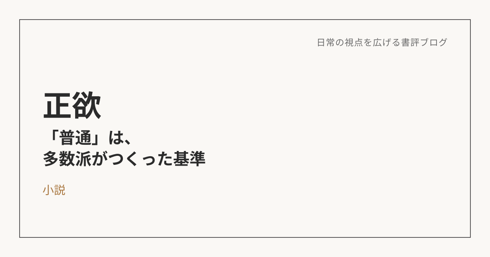

正欲――"普通"は、多数派がつくった基準でしかない
この本について
朝井リョウの『正欲』は、水に性的欲求を覚える人物を軸に、「多様性」という言葉が広く使われるようになった社会の中で、その言葉がすくい取れていないものは何かを突きつけてくる小説だ。読みながら何度も、自分の中の「普通」の輪郭を確かめさせられる一冊だった。
"普通"は、事実ではなく基準にすぎない
読んでいて強く残ったのは、「普通」というのは事実ではなく、マジョリティ（多数派）が作り出した基準にすぎない、という視点だ。多数決で決まったものが正義で、少数側にいるものは悪なのか。マジョリティにとっての普通が「普通」で、マイノリティにとっての普通は「普通じゃない」とされてしまう構造に、自分自身も無自覚に乗っかっていたことに気づかされた。そう問い直してみると、自分が当たり前だと思っていたものの土台が、実はかなり頼りないことに気づかされる。
建前としての多様性と、身体感覚としての多様性
「多様性を大事にしよう」という言葉自体は、もう社会の共通言語になっている。ただ、それが自分ごとになった瞬間、反応は変わる。「理解しています」と言うことと、それが実際に身近に来たときに本当に受け止められるかは、まったく別の話だ。建前としての多様性受容と、身体感覚としての多様性受容の間には、思っている以上のズレがある。
じゃあ、自分が許容できる価値観と、拒絶感を覚えてしまう価値観の境界線はどこにあるんだろう。その境界線はなぜ生まれたのか、育ちなのか、経験なのか、社会の空気なのか。そこまで踏み込んで考えないと、「人それぞれだよね」で思考が止まってしまう。自分がそのズレをどこまで自覚できているか、というのがこの本を読んで一番刺さった問いだった。
個人の意識だけでは、見せかけの多様性で終わる
多様性というと、つい「一人ひとりの意識の持ちよう」の話に矮小化しがちだけど、それだけでは表面的な多様性尊重で終わってしまう気がしている。本当の意味で多様性を受け止められる社会にするには、法律や行政の仕組みまで含めて見直す必要があるはずだ。個人の理解と、制度としての受け皿。両方が揃って初めて、「見せかけだけの多様性」から一歩抜け出せるんだと思う。
無意識の前提を、人に押し付けていないか
日常の会話には、無自覚な「前提」がたくさん埋め込まれている。「子どもはつくらないの？」「なんで転職しないの？」「なんで謝らないの？」。こうした何気ない一言は、それぞれ「子どもをつくるのが当然」「転職するのが当然」「悪いことをしたら謝るのが当然」という前提の上に成り立っている。
試しに、もし身近な人がマイノリティ側の価値観を持っていたらと想像してみる。おそらく頭ごなしに否定はしないだろうけど、少し複雑な気持ちにはなるかもしれない。将来苦労するんじゃないかという不安や、「なんでうちだけ」という感情が、ふと顔を出すこともあると思う。それでも最終的には、その人がその人らしく活躍できる場を探したり、応援する側に回りたい。この本を読んでから、自分がこういう前提を無意識のうちに人に押し付けていないか、ふと立ち止まって考えるようになった。
まず事実を、次に自分の感情を受け止める
自分の物差しだけで一方的に判断し、それを人に押し付けてしまうことの危険性は分かった。じゃあどうするか。まず冷静に、客観的に事実を把握する。そのうえで、その事実に対して自分の中に生まれた感情も、一度は否定せずに受け入れる。そして、自分がそう判断してしまう理由や、他の可能性はないかを考えてみる。この順番を踏むだけで、無意識の押し付けはかなり減らせる気がしている。「普通」という言葉の暴力性に気づいたところで終わらせず、日常の会話レベルで見直していくこと。それが、この本から持ち帰った一番実践的な気づきだった。
※本記事はNotionに書き溜めた読書メモをもとに、AIの編集サポートを受けて構成しています。